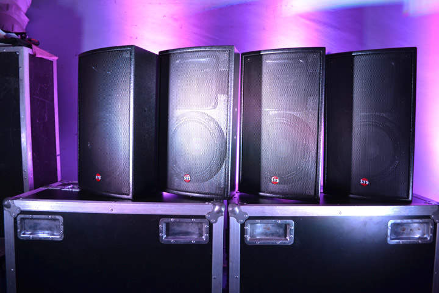

Si contás con el amplificador, podrás amplificar el sonido de tu fiesta o recital; en el caso de que no cuentes con amplificador, te lo podemos proporcionar.

iluminacion led
La iluminación led ambiental pretende crear un sentimiento concreto, ya sea romanticismo, fantasía, elegancia, melancolía… así que es muy importante utilizar led de colores y elegir el color idóneo